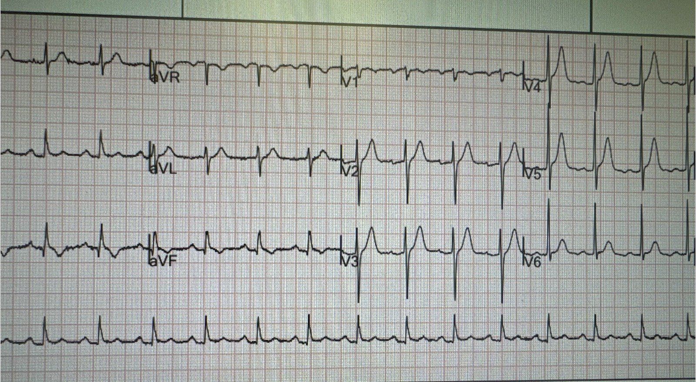
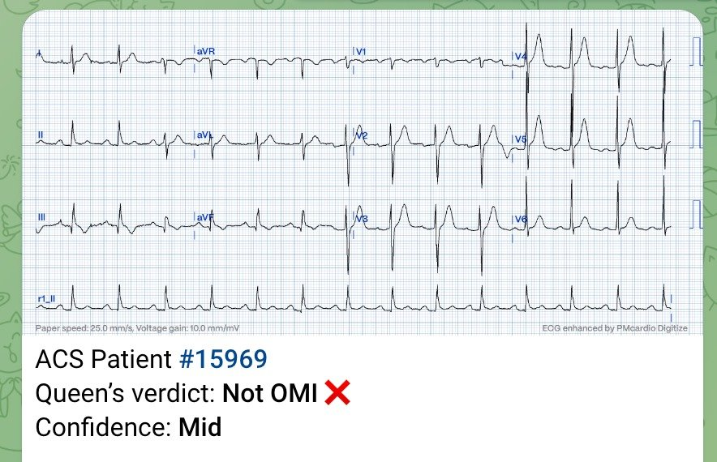
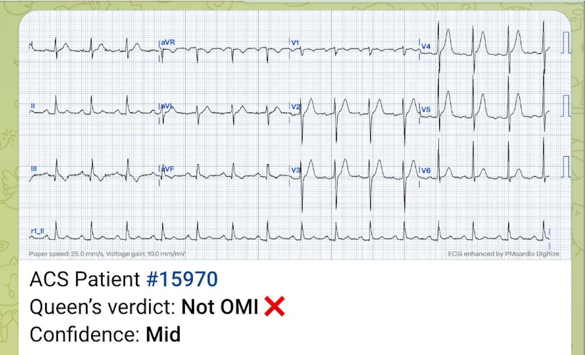
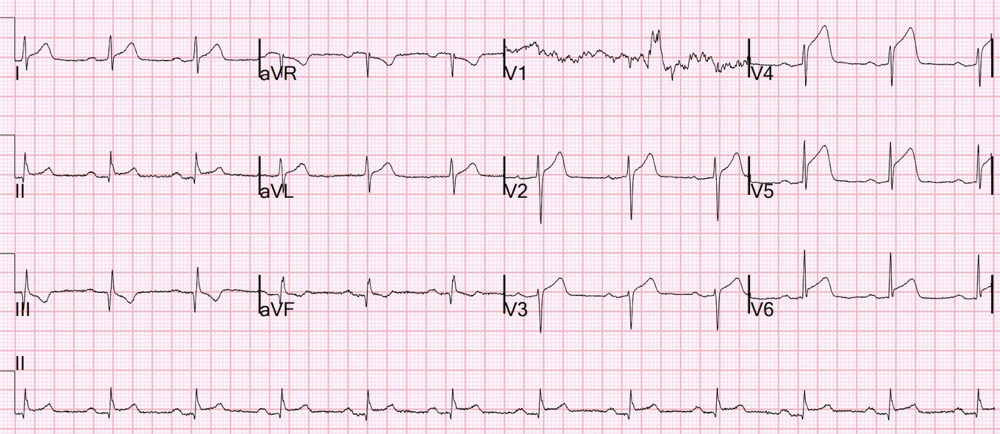
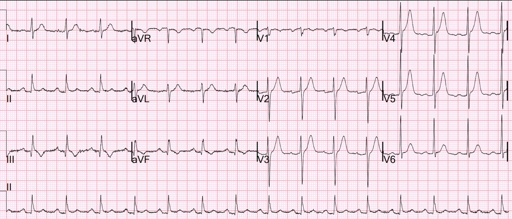
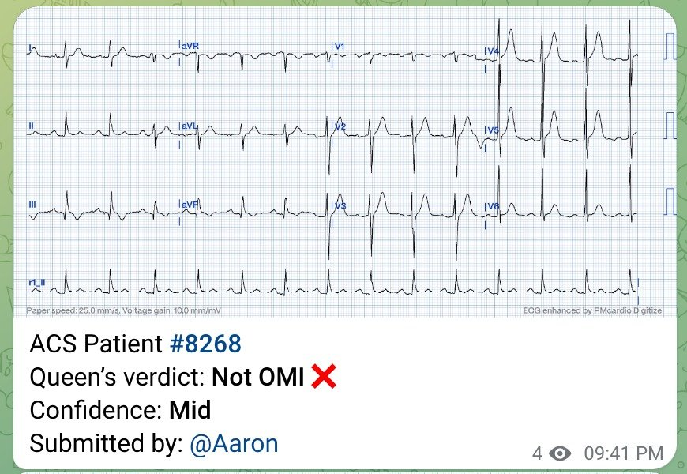
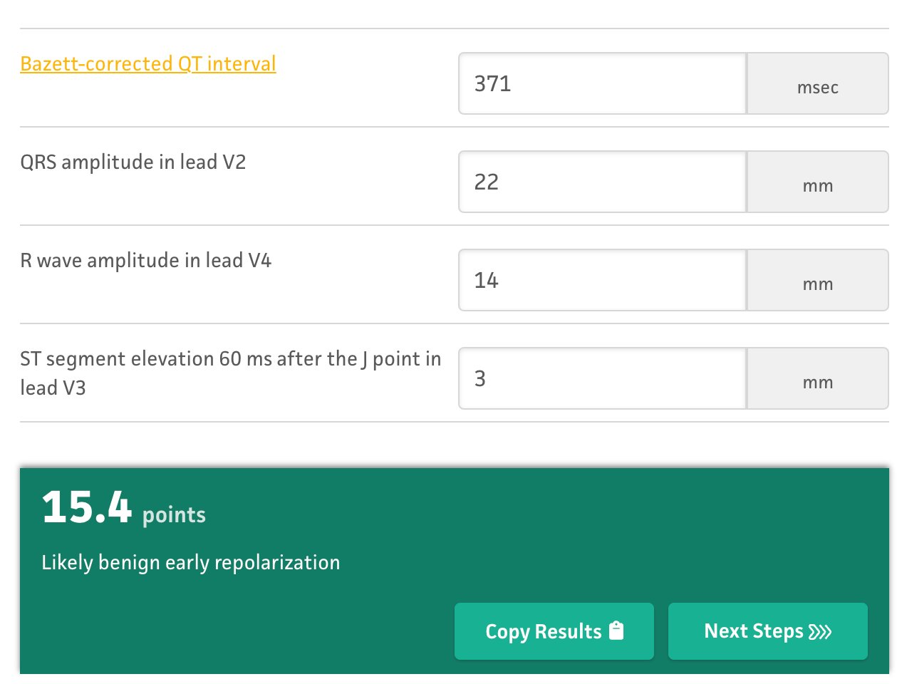
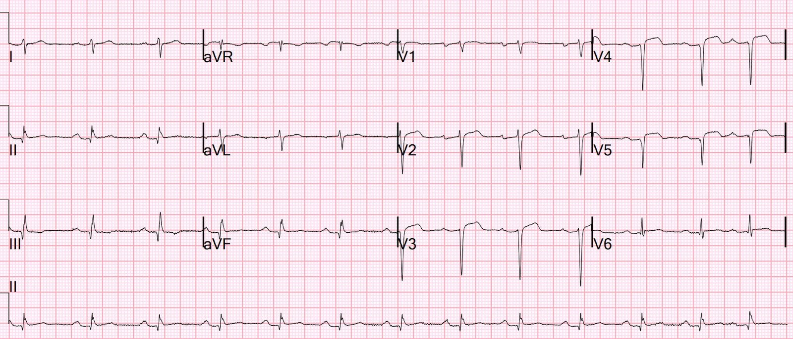
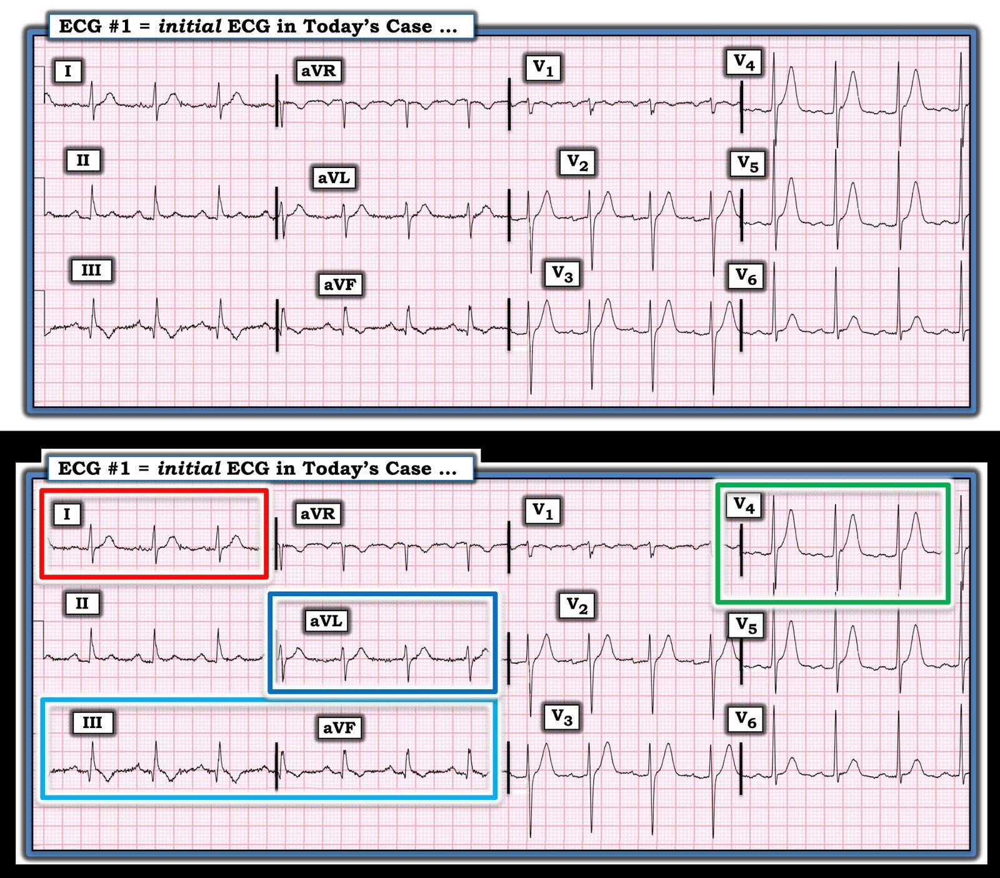

14/10/2023 — Điện tâm đồ này được nhắn tin cho tôi sau sự việc mà không kèm thông tin gì. Bạn nghĩ sao?
Bản dịch tiếng Việt của bài "This ECG was texted to me after the fact with no information. What do you think?" – Dr. Smith’s ECG Blog. Giữ nguyên toàn bộ 11 hình ảnh của bản gốc.
Điện tâm đồ này được nhắn tin cho tôi mà không kèm thông tin nào khác, chỉ có câu: “Anh sẽ thấy cái này trong Queen of Hearts.” Tôi cho rằng đây là ca đang diễn ra theo thời gian thực.


Lưu ý đây là ảnh chụp màn hình máy tính, và nửa trái của điện tâm đồ bị cắt mất.
Điều này có thể ảnh hưởng đến kết quả.
Chẩn đoán của Queen dựa trên hình ảnh không đạt yêu cầu này là “Không phải OMI” (Not OMI), độ tin cậy trung bình:


Đây là câu trả lời của tôi: “Tôi không chắc là mình đồng ý với Queen ở ca này. Hãy cẩn thận với nó. Lưu ý rằng Queen có độ tin cậy thấp.”
Vì sao tôi lo ngại? Các sóng T khá cao. Mặc dù đa số sóng T tối cấp (hyperacute) đều to, rộng, đầy đặn và cân đối so với QRS (do QT dài hơn + ST thẳng đuỗn) — một số chỉ đơn thuần cao quá mức so với QRS. Tôi rất nghi ngờ đây là điện tâm đồ nền của bệnh nhân. Dù vậy, điện tâm đồ OMI của một số bệnh nhân trông như bình thường, và bạn chỉ biết chắc chắn nếu có thể so sánh với các điện tâm đồ cũ hoặc với các điện tâm đồ liên tiếp (xem các điện tâm đồ liên tiếp đang tiến triển hay đang cải thiện).
Cũng có sóng T đảo ngược đáng lo ngại ở các chuyển đạo dưới, đây là một manh mối khác gợi ý tắc LAD
Thực tế, điện tâm đồ này đáp ứng tiêu chuẩn STEMI!! Có ST chênh lên (STE) hơn 1 mm ở V4 và V5. Vì sao thuật toán thông thường không chẩn đoán STEMI?
Đây là một ca mà điện tâm đồ trông bình thường, nhưng không còn bình thường khi so với điện tâm đồ cũ. (Ở ca đó, công thức 4 biến cho kết quả dương tính và Queen chẩn đoán OMI với độ tin cậy trung bình).
Transient STEMI, serial ECGs prehospital to hospital, all troponins negative (less than 0.04 ng/ml) (STEMI thoáng qua, các điện tâm đồ liên tiếp từ trước viện đến bệnh viện, tất cả troponin đều âm tính — dưới 0,04 ng/ml)
Người gửi hỏi: “Anh có kích hoạt phòng thông tim không?” Tôi trả lời: “Còn tùy bệnh nhân. Bao nhiêu tuổi? Bệnh cảnh thế nào?”
Đây là bệnh sử:
Nam 62 tuổi, đau ngực từng cơn trong 2 ngày, nay đau liên tục.
Trả lời: Có, tôi sẽ kích hoạt phòng thông tim.
Việc tốt nhất tiếp theo: ghi các điện tâm đồ liên tiếp thường xuyên. Tôi luôn khuyên cứ 15 phút ghi một lần.
Hóa ra điện tâm đồ này đã được ghi khoảng 3 giờ trước đó. Đáng tiếc là bệnh nhân không được ghi lại điện tâm đồ cho đến sau khi kết quả troponin I đầu tiên trả về là 1100 ng/L.
Đây là bệnh sử chi tiết hơn:
Đến khoa cấp cứu vì đau ngực. Bệnh nhân kể bắt đầu đau ngực sau xương ức từ hai ngày trước. Hôm qua, do triệu chứng kéo dài, bệnh nhân đã khám tại một cơ sở cấp cứu ngoại trú (urgent care) và được cho về với chẩn đoán giả định là trào ngược dạ dày-thực quản (GERD) sau khi triệu chứng cải thiện với Maalox. Bệnh nhân cho biết triệu chứng dần quay trở lại và nay nặng hơn. Bác sĩ nội trú năm nhất (intern) ở khoa cấp cứu đã bị chẩn đoán GERD của ngày hôm trước làm thiên lệch.
Ngoài lề: chỉ có một cách để chẩn đoán GERD là nguyên nhân gây khó chịu ở ngực, và cách đó bao gồm việc loại trừ nhồi máu cơ tim bằng điện tâm đồ và troponin. Triệu chứng của nhồi máu cơ tim cấp và GERD giống hệt nhau, và cả hai đều có thể đỡ hoặc không đỡ khi dùng thuốc kháng acid. Có rất nhiều bệnh nhân đã tử vong với chẩn đoán GERD.
Xem 2 ca này:
Missed myocardial infarction with subsequent cardiac arrest (Bỏ sót nhồi máu cơ tim, sau đó ngừng tim)
Chest pain relieved by Maalox and viscous lidocaine (Đau ngực đỡ khi dùng Maalox và lidocaine dạng gel nhớt)
Lúc đó tôi vẫn chưa nhận ra hình ảnh anh ấy gửi bị cắt mất.
Tôi vào hồ sơ bệnh án của bệnh nhân và lấy ra một hình ảnh chất lượng cao:

Thuật toán thông thường đọc là:
NHỊP XOANG
GÓC QRS-T BẤT THƯỜNG [CHÊNH LỆCH TRỤC QRS-T > 60]
ĐIỆN TÂM ĐỒ BẤT THƯỜNG
Lần này Queen vẫn nói “Không phải OMI, độ tin cậy trung bình.”


Ca bệnh tiếp diễn:
Họ đã không chẩn đoán OMI. Đáng tiếc là phải chậm trễ 150 phút mới ghi lại điện tâm đồ.
Đây là điện tâm đồ ghi lại ở phút thứ 150:


Đây lại là điện tâm đồ đầu tiên:


Đây lại là kết quả đọc của Queen:


Đây là công thức 4 biến:


Đây là một giá trị rất thấp
Chụp mạch vành: tắc 100% LAD đoạn giữa
Điện tâm đồ ngày hôm sau:


Một kết cục rất xấu
Troponin I độ nhạy cao (hs troponin I) đỉnh ＞60.000 (quá cao, không đo được; OMI rất lớn)
Siêu âm tim chính thức:
Phân suất tống máu thất trái ước tính là 42%.
Kích thước buồng thất trái bình thường, thành dày nhẹ.
Rối loạn vận động thành khu trú: vách trước đoạn giữa-mỏm, thành trước, thành trước bên và thành mỏm giảm động.
Với troponin đỉnh rất cao (một thước đo tốt về kích thước ổ nhồi máu) cùng với mất sóng R và ST chênh lên kéo dài, khả năng phân suất tống máu hồi phục đáng kể là thấp. Bệnh nhân này có khả năng cao bị suy tim.
Những điểm cần học:
1. Đôi khi điện tâm đồ OMI trông khá bình thường
2. Luôn so sánh với điện tâm đồ cũ hoặc ghi các điện tâm đồ liên tiếp thường xuyên
3. KHÔNG BAO GIỜ chẩn đoán khó chịu ở ngực là do GERD khi chưa đánh giá mạch vành.
4. Ngay cả Queen đôi khi cũng sai.
5. Luôn cân nhắc xác suất tiền nghiệm khi đánh giá điện tâm đồ để tìm OMI (hoặc bất kỳ xét nghiệm nào cho bất kỳ bệnh lý nào!)

===================================
BÌNH LUẬN CỦA TÔI, bởi KEN GRAUER, MD (13/10/2023):
===================================
Thử thách của ca hôm nay là đánh giá điện tâm đồ ban đầu khi không có chút bệnh sử nào — đúng như cách ca bệnh được trình bày với Dr. Smith.
CÂU HỎI:
- BẠN đã đọc điện tâm đồ ban đầu trong ca hôm nay như thế nào — trước khi Dr. Smith tiết lộ bệnh sử?
Để rõ ràng, ở Hình 1 — tôi đã đặt lại điện tâm đồ ban đầu ở ô TRÊN — và ghi chú “quá trình suy nghĩ” của tôi ở ô DƯỚI.


SUY NGHĨ CỦA TÔI về điện tâm đồ ban đầu:
Trước hết nhìn vào ô TRÊN của Hình 1 — Nhịp xoang, tần số ~85 lần/phút. Tất cả các khoảng và trục đều bình thường. Tùy theo tuổi và giới của bệnh nhân — có thể có điện thế ở mức ranh giới cho LVH (Xem bình luận của tôi về tiêu chuẩn LVH — ở cuối trang trong bài ngày 15 tháng Tám năm 2022 trên Dr. Smith’s ECG Blog). Về Thay đổi Q–R–S–T:
- Có sóng Q hẹp ở mỗi chuyển đạo dưới (gồm cả một sóng Q khá sâu ở chuyển đạo III — dù sóng q ở chuyển đạo II rất nhỏ).
- Tăng tiến sóng R bình thường — ở chỗ vùng chuyển tiếp (tức là nơi chiều cao sóng R trở nên lớn hơn độ sâu sóng S) xảy ra đúng chỗ, trong khoảng V2 đến V4.
- Thay đổi sóng ST-T — đáng được bình luận chi tiết riêng (Bên dưới).
Cách tiếp cận tuần tự của tôi ở ô DƯỚI:
Giống Dr. Smith — tôi không biết bệnh sử trước khi đọc điện tâm đồ #1 trong Hình 1.
- Sự chú ý của tôi trước hết bị thu hút bởi hình dạng ST-T ở chuyển đạo I (trong hình chữ nhật màu ĐỎ). Đáng tiếc — chúng ta chỉ thấy 3 phức bộ ở chuyển đạo I, và việc đọc càng khó do có những dao động nhỏ đáng kể của đường nền (nhiễu). Có khác biệt nhẹ về hình dạng đoạn ST giữa phức bộ thứ 1 và thứ 3 — so với phức bộ thứ 2 mà chúng ta thấy ở chuyển đạo I của Hình 1. Không thể nhầm được rằng đoạn ST của phức bộ ở giữa (thứ 2) ở chuyển đạo I thẳng (dẹt) một cách bất thường. Điều này kém thuyết phục hơn ở phức bộ QRS thứ 1 và thứ 3.
- Trong bối cảnh đoạn ST thẳng đuỗn bất thường của phức bộ QRS ở giữa này ở chuyển đạo I — tôi nghĩ rằng đỉnh của sóng T ở mỗi phức bộ trong 3 phức bộ ở chuyển đạo I đều “đầy đặn” hơn mức đáng có (tức là, Chẳng phải đỉnh của mỗi sóng T ở chuyển đạo I đều “đầy đặn” hơn đỉnh của bất kỳ sóng T dương nào khác trên điện tâm đồ #1 sao?).
- XIN NHẤN MẠNH: Phải thừa nhận rằng điều tôi mô tả ở trên về hình dạng ST-T ở chuyển đạo I là rất tinh tế — nhưng “MẮT tôi” lập tức bị hút vào hình dạng ST-T trong hình chữ nhật ĐỎ này. Khi thấy điều này, tôi NGHĨ: — Nếu bệnh sử của ca hôm nay là đau ngực (CP — Chest Pain) mới xuất hiện, đáng lo ngại — thì có lẽ chúng ta đang thấy sóng T tối cấp ở chuyển đạo I?
Sự chú ý của tôi tiếp theo bị thu hút bởi hình dạng QRST ở các chuyển đạo dưới III và aVF (trong hình chữ nhật màu XANH NHẠT).
- Như đã nêu trước đó — Chúng ta thấy sóng Q tương đối sâu (dù hẹp) ở chuyển đạo III và aVF.
- Mặc dù đoạn ST ở chuyển đạo III và aVF không chênh lên đáng kể — các đoạn ST này có dạng vòm (coving), theo sau là sóng T đảo ngược khá sâu.
- Tôi không đưa chuyển đạo dưới thứ 3 ( = chuyển đạo II) vào hình chữ nhật XANH nhạt — vì mặc dù có ST chênh lên nhẹ ở chuyển đạo II, hình dạng tổng thể của ST-T trông tương đối lành tính.
- Nhận định: Tôi nghĩ bản thân hình dạng QRST ở chuyển đạo III và aVF là không có giá trị chẩn đoán — NHƯNG — Nếu bệnh sử là đau ngực mới xuất hiện, thì ST dạng vòm kèm sóng T đảo ngược khá sâu có thể phản ánh thay đổi soi gương với sóng T tối cấp ở chuyển đạo I.
- LƯU Ý: Tôi không biết nên diễn giải hình dạng ST-T ở chuyển đạo aVL thế nào. Dù rõ ràng là không có giá trị chẩn đoán — sóng T ở chuyển đạo aVL tương đối cao (gần bằng biên độ sóng R ở chuyển đạo này) — đến mức NẾU bệnh sử là đau ngực mới xuất hiện, thì sóng T này ở aVL có thể là thay đổi soi gương với sóng T đảo ngược khá sâu ở chuyển đạo III.
Cuối cùng — Sự chú ý của tôi tiếp đó bị thu hút bởi ST-T ở chuyển đạo V4 (trong hình chữ nhật màu XANH LÁ).
- Do có sóng T nhọn ở nhiều chuyển đạo trước tim — tôi sẽ kiểm tra để chắc chắn kali (K+) huyết thanh bình thường (Tôi không nghĩ đây là tăng kali máu — vì đáy của các sóng T ở chuyển đạo trước tim này không quá hẹp như thường thấy trong tăng kali máu — và chúng ta không thấy sóng T nhọn ở các chuyển đạo chi — nhưng dù sao vẫn đáng kiểm tra K+ huyết thanh).
- Mặc dù tăng tiến sóng R ở các chuyển đạo trước tim là bình thường (biên độ sóng R đạt mức tốt ở V2 đến V5) — và mặc dù tôi không cho rằng hình dạng tổng thể của ST-T ở bất kỳ chuyển đạo trước tim nào là bất thường (tức là, QTc bình thường — sóng T dương ở V2 đến V5, không có ST chênh lên hay chênh xuống bất thường) — tôi thực sự nghĩ rằng biên độ sóng T ở chuyển đạo V4 không tương xứng so với chiều cao sóng R và độ sâu khiêm tốn của sóng S ở chuyển đạo này. Tôi nghĩ NẾU bệnh sử là đau ngực mới xuất hiện — thì đây có thể là dấu hiệu báo trước của sóng T de Winter.
- Và — NẾU sóng T cao không tương xứng ở chuyển đạo V4 thực sự là một sóng T de Winter sớm — thì biên độ sóng T ở các chuyển đạo V2,V3 và V5 lân cận có thể cũng đều cao không tương xứng, khi xét đến biên độ sóng R ở các chuyển đạo này.
Tổng hợp lại tất cả:
Tôi hoàn toàn thừa nhận rằng phần mô tả ở trên “tốn khá nhiều chữ”. Tóm lại:
- Tôi nghĩ bản thân điện tâm đồ #1 không có giá trị chẩn đoán — nhưng có thể đáng ngờ, tùy thuộc vào bệnh sử.
- Tôi sẽ không kích hoạt phòng thông tim chỉ dựa vào một điện tâm đồ ban đầu duy nhất này trong ca hôm nay.
- Ngay cả sau khi biết bệnh nhân là nam 62 tuổi với bệnh sử 2 ngày “đau ngực từng cơn — nay liên tục” — tôi vẫn sẽ không kích hoạt phòng thông tim. Nhưng tôi sẽ ghi lại điện tâm đồ rất sớm (chờ không quá 10-15 phút là cùng).
Đáng tiếc (theo Dr. Smith) — Không có điện tâm đồ ghi lại nào cho đến 2,5 giờ sau khi ghi điện tâm đồ #1 — lúc đó điện tâm đồ cho thấy STEMI rõ ràng.
- Còn đáng lo ngại hơn cả việc không ghi lại điện tâm đồ cho đến 2,5 giờ sau — là không hề có đề cập nào về điện tâm đồ ngày hôm trước của bệnh nhân này trông ra sao (tức là, Bệnh nhân này đã được khám ngày hôm trước tại một cơ sở cấp cứu ngoại trú — và được chẩn đoán GERD sau khi triệu chứng cải thiện với Maalox).
- NẾU chẩn đoán trong lần khám tại cơ sở cấp cứu ngoại trú ngày hôm trước được đưa ra mà không ghi điện tâm đồ — thì đó sẽ là một Điểm cần học thiết yếu — vì triệu chứng lan tới vùng thượng vị không hiếm gặp trong nhồi máu cấp (và theo Dr. Smith — “đỡ sau khi dùng Maalox” hoàn toàn không đáng tin cậy).
- Mặt khác, NẾU điện tâm đồ đã được ghi tại cơ sở cấp cứu ngoại trú ngày hôm trước — thì không có lý do gì để không lấy bản sao của bản ghi đó. Với diễn tiến thành ST chênh lên rõ rệt kiểu STEMI trong 2,5 giờ kể từ khi ghi điện tâm đồ #1 — rất có thể điện tâm đồ 12 chuyển đạo ngày hôm trước trông khác hẳn, và lẽ ra đã báo động cho các bác sĩ về chẩn đoán một biến cố cấp ngay khi so sánh điện tâm đồ #1 với bản ghi của một ngày trước đó.
SUY NGHĨ CUỐI CÙNG:
Dr. Smith ngay lập tức nhận ra rằng điện tâm đồ ban đầu của ca hôm nay rõ ràng sẽ gợi nghi một biến cố cấp, tùy thuộc vào Bệnh sử.
- Từ lần đầu nhìn điện tâm đồ #1 — tôi không chắc chắn rằng có một biến cố cấp đang diễn ra. Nhưng tôi thực sự biết rằng NẾU bệnh sử là đau ngực đáng lo ngại, mới khởi phát — thì khả năng có biến cố cấp sẽ tăng lên đáng kể.
- Việc không “chắc chắn” từ một điện tâm đồ ban đầu duy nhất về việc có hay không một biến cố cấp đang diễn ra là CHẤP NHẬN ĐƯỢC.
- Trong một ca như ca hôm nay, ngay cả khi troponin ban đầu trả về “bình thường” — điều đó cũng không loại trừ khả năng có biến cố cấp (vì đôi khi cần một chút thời gian để troponin tăng lên).
- Vì vậy, khi bạn không chắc chắn từ một điện tâm đồ ban đầu — những việc đơn giản như tìm một điện tâm đồ cũ để so sánh và sớm ghi lại điện tâm đồ ban đầu (tức là, tối đa trong vòng 10-20 phút) — sẽ thường xuyên một cách đáng ngạc nhiên cho chúng ta biết “câu trả lời” sớm hơn nhiều so với những gì đã xảy ra trong ca đáng tiếc hôm nay.